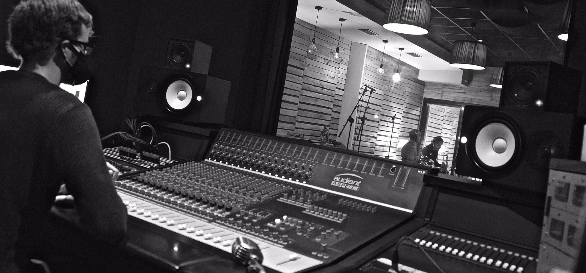
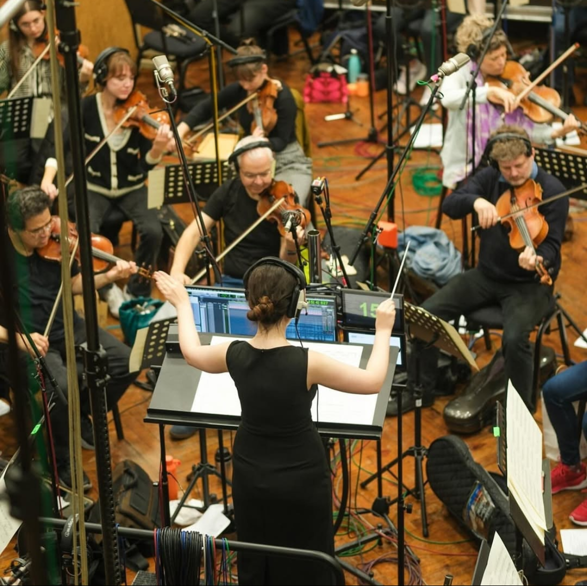
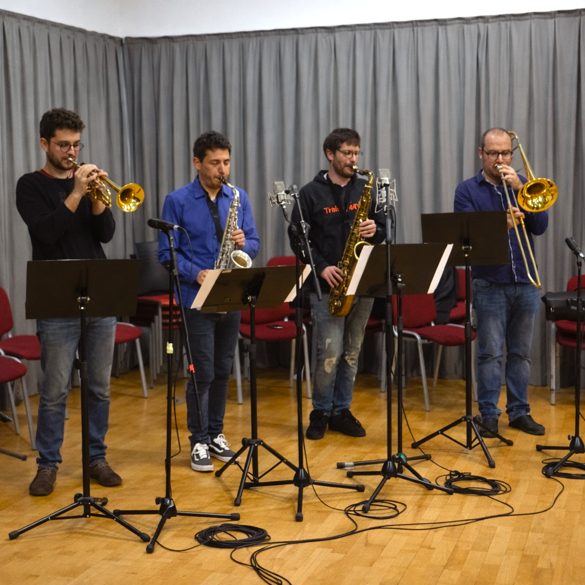
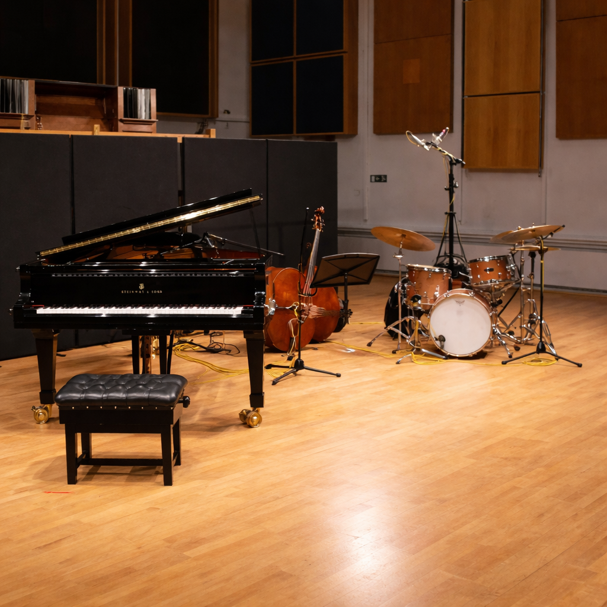
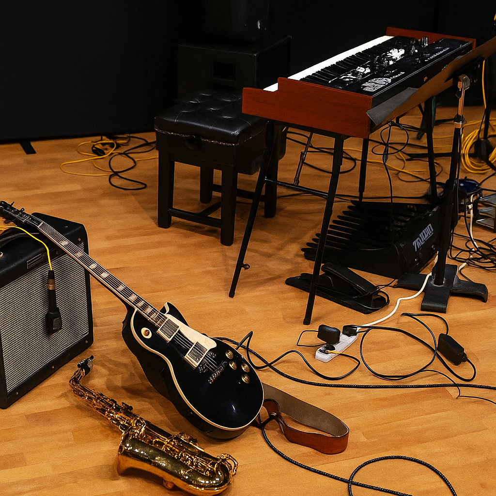
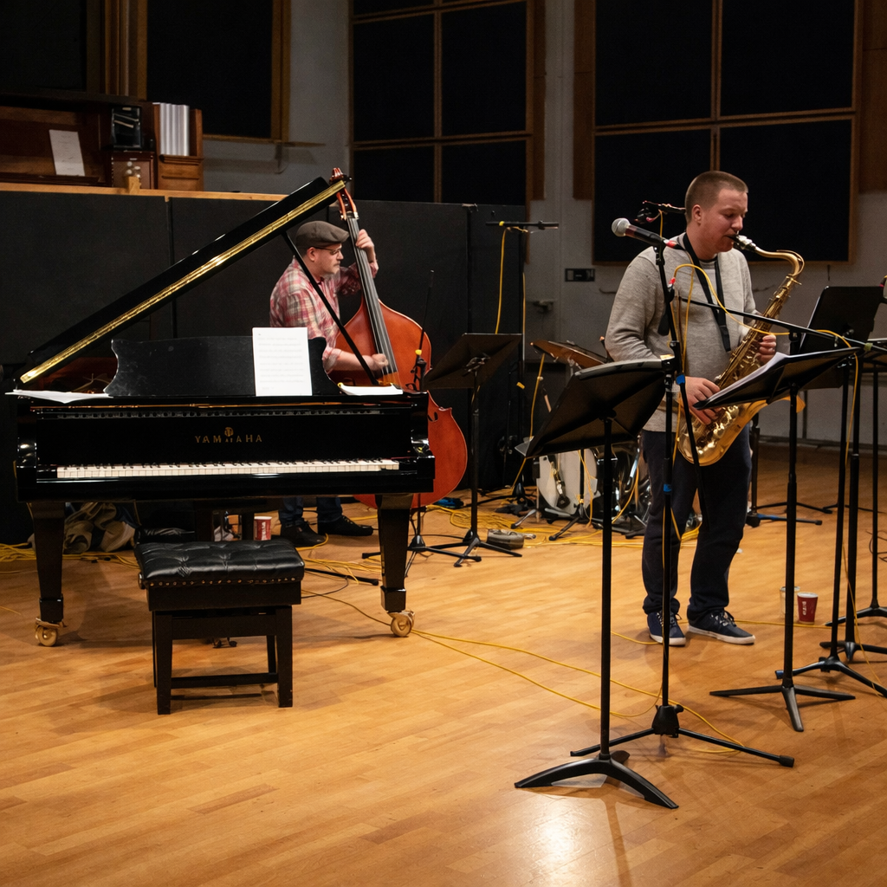
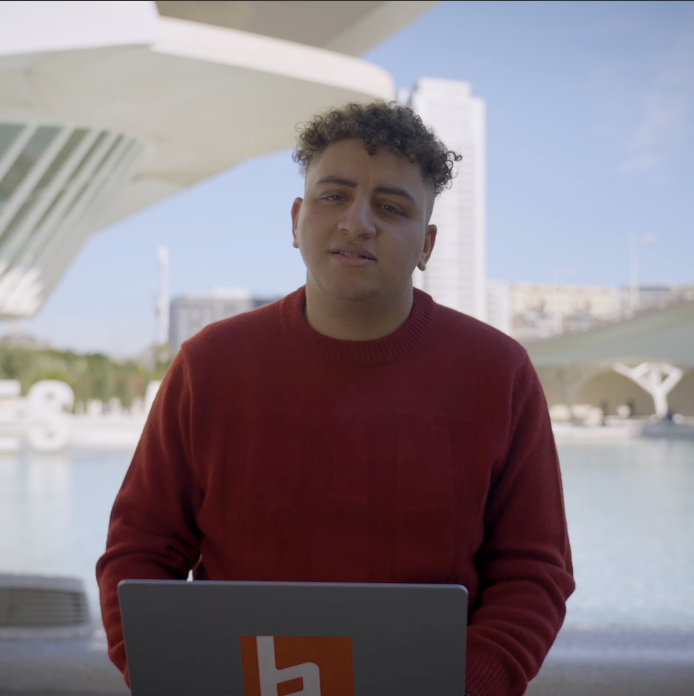
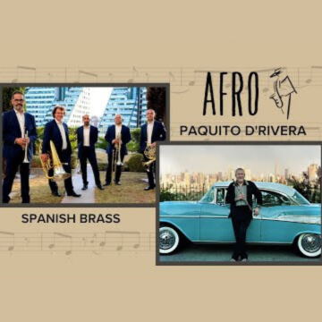
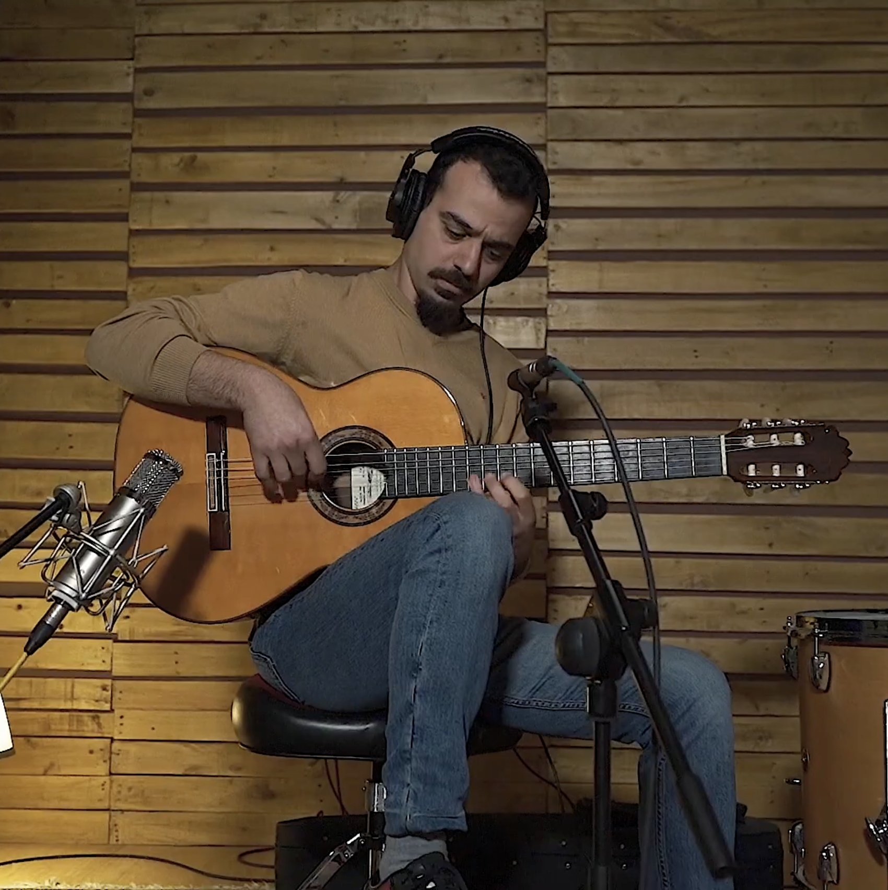
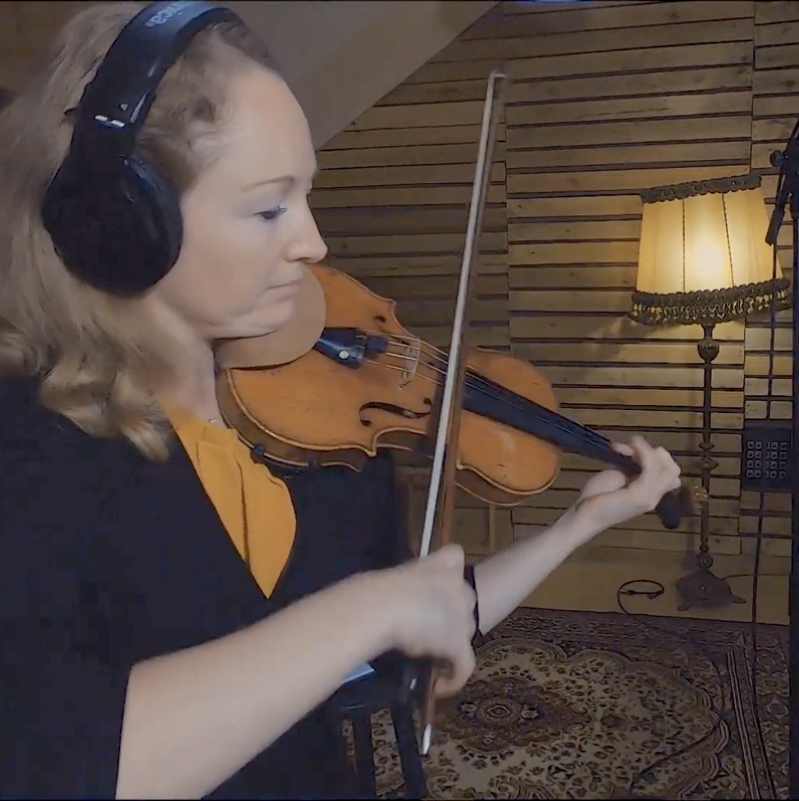

NICOLÁS ROMERO
Recording, Mixing & Music Engineer

Nicolás Romero is a recording and mixing engineer with a background in music performance and composition, currently working at Berklee College of Music Valencia and Jazztone Studios. This portfolio brings together work carried out in professional studio and live recording contexts, including studio albums, live broadcasts, and orchestral recording sessions. The projects reflect experience with a wide range of ensembles and production conditions across jazz, chamber music, tango, pop, and film scoring.
Studio Albums

Light in transit — PERAZA (2026)
Recording Engineer · Audio Editor
Recorded at Jazztone Studios, this modern jazz and contemporary crossover project involved setting up the recording session and tracking the rhythm section for some tracks. The post-production phase required advanced polyphonic editing. Careful attention was paid to preserving the natural performance and phase coherency of the sax and trumpet, managing acoustic bleed while achieving highly precise and transparent tuning.

Carnaval en Valencia — Rayko León (2026)
Recording Engineer
A Latin jazz and fusion album recorded live at Jazztone Studios. This session required managing a large ensemble setup, including Rayko León, Perico Sambeat, Chipi Chacón, Carlos Llidó, Abel Sanabria, Sebastián Laverde, and Fabio Rivera. Tracking a high volume of material in a single day prioritized workflow efficiency and room/mic acoustics to capture the ensemble's live energy.

Pasión — Púrpura Pansa (2025)
Recording Engineer · Mixing · Mastering
Recorded at the Auditori de Guadassuar, this project pursued a deliberately distant, audience-perspective sound. The engineering and mixing approach prioritized natural hall ambience and ensemble blend over close detail, aligning the final result with the group’s vision of a live concert listening experience.

Rumi's Garden: Love Songs for the Mystic Soul — Akshay Baheti (2024)
Session Guitarist
Recorded live at El Spot Studios, this album blends Indian musical traditions with a modern Lo-Fi aesthetic. The project involved tracking electric guitar alongside Michael Ventura on saxophone, Anthony Lafond on drums, and Akshay Baheti producing and singing.

Saxtravels — Púrpura Pansa (2023)
Mixing · Mastering
The ensemble recorded the material independently at the Auditori de Guadassuar. Editing, mixing, and mastering were carried out to achieve consistency across repertoire recorded under non-studio conditions.

Gregory Fritze: Music for Brass Quintet — Spanish Brass (2021)
Recording Engineer
Recorded at Jazztone Studios in Valencia over the course of several sessions, focusing on achieving a balanced and cohesive sound for the brass ensemble.

Intropía — Pablo Picazo (2021)
Assistant Recording Engineer
Assisted lead engineer Genevieve Bennetts during sessions for piano, strings, and percussion at Jazztone Studios, contributing to signal flow, session setup, and documentation.

Sax & Tango — Púrpura Pansa (2020)
Producer · Recording Engineer · Audio Editor
Recorded at Jazztone Studios, this album brings together Púrpura Pansa with Daniel Binelli, Polly Ferman, Víctor Mendoza, and Sebastián Laverde. Responsibilities included session planning, supervising recordings, editing and comping, rough mixes, and managing the production workflow through final mix and master by Pablo Schuller.
Orchestral & Film Scoring

"The Trail of the Light" — Shiva Mohammadi (2024)
Mixing · Mastering
Recorded at AIR Studios, Lyndhurst Hall, this full symphonic score was mixed to retain orchestral depth, cinematic scale, and transparency. The approach emphasized natural dynamics and spatial realism, honoring the hall’s renowned acoustics.

"Forget Me Not" — Shiva Mohammadi (2024)
Mixing · Mastering
Performed by the Budapest Art Orchestra and recorded at East Connection Music Recording Studio, this score required careful balance between emotional immediacy and orchestral clarity.

DAKARETAI OTOKO 1-I NI ODOSARETE IMASU: SPAIN-HEN (2021)
Assistant Recording Engineer
Assisted lead engineer Nic Hard and producer Magda Giannikou for this anime soundtrack. The session focused on capturing authentic flamenco elements, including guitar, percussion, vocals, and live tablao dance performed by José Manuel León, Sergio Martínez, Rafael Vargas, and Nino De Los Reyes. The technical workflow required streaming the recording live to the composer and production team in Japan.
Live & Broadcast Recordings
Spanish National Anthem — 2026 FIFA World Cup Final (2026)
Assistant Recording Engineer
Assisted in tracking the Spanish Brass quintet for the World Cup Final in New York. The recording served as the official broadcast audio for the global livestream and stadium playback, demanding pristine audio quality for an international audience.
“Lágrima” — Live at Berklee Valencia Commencement (2022)
Mixing · Mastering
This intimate performance for voice and looped double bass was reconstructed from minimal source material. The original DI bass recording was edited into multiple layers to regain control over texture, space, and movement, allowing the loop-based performance to translate with depth and clarity. Vocal processing focused on maintaining intimacy while achieving presence in a concert context.
“Crosswinds” — Mediterranean Ensemble (2022)
Mixing · Mastering
This instrumental piece features a diverse acoustic–electric ensemble spanning strings, winds, rhythm section, and synths. The mix focused on preserving ensemble interaction while keeping structural clarity in a live recording.

“Como Lo Oyes” — Paco Torregrosa Octet (2019)
Recording Engineer · Mixing · Mastering
Recorded live at the Conservatori Superior de Música de València, this session was undertaken during formal studies in music technology and composition. Full responsibility for the recording, mix, and master was assumed as a voluntary project.
“Nido del Aire” — Paco Torregrosa Octet (2019)
Recording Engineer · Mixing · Mastering
A companion recording from the same session, maintaining consistency across a large jazz ensemble while preserving the spontaneity of a live performance.

Stella Roberts Trio — Live Jazz Broadcast (2015)
Recording · Mixing · Mastering
Jazz piano trio recorded live during the internship at the Royal Birmingham Conservatoire. This is the first project fully engineered independently, from recording through final mix and master.

Ben Lee Quintet — Live Jazz Broadcast (2015)
Recording · Mixing · Mastering
A live broadcast recorded at Royal Birmingham Conservatoire, co-engineered with Dan Callaghan. This marked the first published mix and master, capturing the energy of a live jazz ensemble where lead and supporting roles shifted continuously between instruments.

David Sear Quintet — Live Jazz Broadcast (2015)
Assistant Recording Engineer
First professional recording experience, assisting during tracking and attending the mixing session.
Studio Sessions & Singles

"Wszystko Płynie" — Ada Nasiadka & Weronika Nowak (2026)
Vocal Recording Engineer
Recorded at Jazztone Studios, this funk-soul track involved tracking main and background vocals. The role included vocal production assistance, providing technical guidance on tuning and performance to support the artist's vision.

“What You thought 2 (MB4L)” — PropheT, Joshua Moore (2026)
Assistant Producer · Session Guitarist
A rap production driven by heavy, rock-inspired electric guitars. Contributions included performing pre-written parts, composing new layers, and tracking improvised solos, alongside providing technical and creative input as an assistant producer to shape the track's arrangement.

“Manos de mujer” — Chipi Chacón ft. Tony Vega (2025)
Vocal Recording Engineer
Recorded at Jazztone Studios, this session involved tracking background vocals featuring Chipi Chacón, Carlitos D' Castro, and Elvin Vivencias. The engineering approach focused on capturing a cohesive and balanced vocal blend for the latin backing arrangements.

“A Footprint on the Bathroom Floor” — Emiliano Begni (2025)
Recording Engineer (Saxophone)
Recorded at El Spot Studios, this session focused on capturing a featured saxophone solo performed by David Romero, integrating expressive nuance within a modern jazz context.

“De Venezuela Te Hablo Yo” — Eddi Yane (2025)
Vocal Recording Engineer
Recorded at Jazztone Studios, this session focused on capturing expressive Latin vocals with clarity and warmth, ensuring flexibility for downstream production and mixing.

"My Favorite Things" — Happy Holidays from Berklee (2023)
Vocal Recording Engineer
Part of a global holiday collaboration across Berklee campuses, this production involved recording lead vocals in Valencia under the production of Olga Roman, with vocalist Filo Ebid. The session focused on capturing a polished pop vocal sound that could integrate seamlessly with recordings from multiple international locations.

“Afro” — Paquito D’Rivera & Spanish Brass (2021)
Recording Engineer (Brass Ensemble)
Recorded at Jazztone Studios, this session focused on capturing a brass quintet ensuring the ensemble’s articulation translated effectively in a rhythmically complex setting.
“Dizzyness” — Paquito D’Rivera & Spanish Brass (2021)
Recording Engineer (Brass Ensemble)
A companion session to “Afro,” recorded under a fast-paced studio workflow. The session required rapid session management and real-time decision-making to keep up with consecutive takes while maintaining continuity and performance flow.

“Not a Palindrome” — Emvoes Ensemble (2021)
Recording Engineer
Part of the album "Tiempo quemado por el sol", this piece combines nylon guitar, violin, viola, flute, upright bass and piano.

“Sparkdance” — Emvoes Ensemble (2021)
Recording Engineer
Duo for violin and piano. Microphone placement and room balance were prioritized to retain nuance and dynamic contrast.